Original author: Bill Marsden
The 555 integrated circuit is the most popular chip ever manufactured. Independently manufactured by more than 10 manufacturers, still in current production, and almost 40 years old, this little circuit has withstood the test of time. It has been redesigned, improved, and reconfigured in many ways, yet the original design can be bought from many vendors. The design of this chip was right the first time.
Originally conceived in 1970 and created by Hans R. Camenzind in 1971, over 1 billion of these ICs were made in 2003 with no apparent reduction in demand. It has been used in everything from toys to spacecraft. Due to its versatility, availability, and low cost it remains a hobbyist favorite.
One of the secrets to its success is it is a true black box, its symbolized schematic is simple and accurate enough that designs using this simplification as a reference tend to work first time. You don't need to understand every transistor in the base schematic to make it work.
It has been used to derive the 556, a dual 555, each independent of the other in one 14 pin package, and is the inspiration of the 558, a quad timer in a 16 pin package. What few weak points the original design has have been addressed by redesigns into CMOS technology, with its dramatically reduced current and expanded voltage requirements, and yet the original version remains.
Originally conceived as a simple timer, the 555 has been used for oscillators, waveform generators, VCO's, FM discrimination, and a lot more. It really is an all purpose circuit.
SOURCES
PARTS AND MATERIALS
CROSS-REFERENCES
Lessons In Electric Circuits, Volume 3, chapter 8: “Positive Feedback”
Lessons In Electric Circuits, Volume 4, chapter 3: “Logic Signal Voltage Levels”
LEARNING OBJECTIVES
SCHEMATIC DIAGRAM
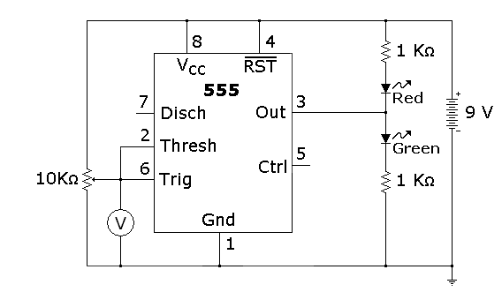
Schmitt Triggers have a convention to show a gate that is also a Schmitt Trigger, shown below.
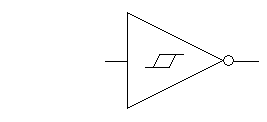
The same schematic redrawn to reflect this convention looks something like this:
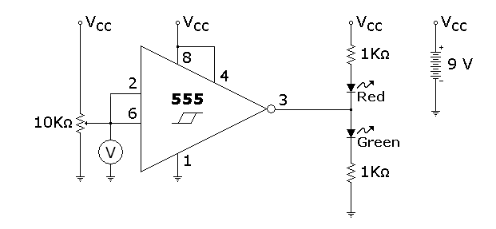
ILLUSTRATION
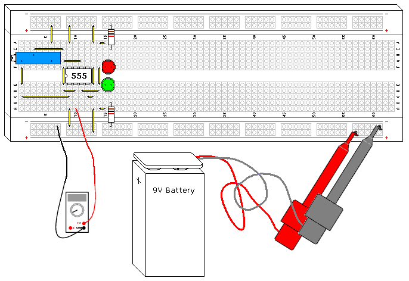
INSTRUCTIONS
The 555 timer is probably one of the more versatile "black box" chips. Its 3 resistor voltage divider, 2 comparators, and built in set reset flip flop are wired to form a Schmitt Trigger in this design. It is interesting to note that the configuration isn't even close to the op amp configuration shown elsewhere, but the end result is identical.
Try adjusting the potentiometer until the lights flip states, then measure the voltage. Compare this voltage to the power supply voltage. Adjust the potentiometer the other way until the LED's flip states again, and measure the voltage. How close to the 1/3 and 2/3 marks did you get?
Try substituting the 9V battery with a 6 volt battery, or two 6 volt batteries, and see how close the thresholds are to the 1/3 and 2/3 marks.
Schmitt Triggers are a fundamental circuit with several uses. One is signal processing, they can pull digital data out of some extremely noisy environments. Other big uses will be shown in following projects, such as an extremely simple RC oscillator.
THEORY OF OPERATION
The defining characteristic of any Schmitt Trigger is its hysteresis. In this case it is 1/3 and 2/3 of the power supply voltage, defined by the built in resistor voltage divider on the 555. The built in comparators C1 and C2 compare the input voltage to the references provided by the voltage divider and use the comparison to trip the built in flip flop, which drives the output driver, another nice feature of the 555. The 555 can drive up to 200ma off either side of the power supply rail, the output driver creates a very low conduction path to either side of the power supply connections. The circuit "shorts" each side of the LED circuit, leaving the other side to light up.
The 5KΩ resistors are not very accurate. It is interesting to note that IC fabrication doesn't generally allow precision resistors, but the resistors compared to each other are extremely close in value, which is critical to the circuit's operation.
PARTS AND MATERIALS
CROSS-REFERENCES
Lessons In Electric CircuitsVolume 1, chapter 16: Voltage and current calculations
Lessons In Electric Circuits, Volume 1, chapter 16: Solving for unknown time
Lessons In Electric Circuits, Volume 4, chapter 10: Multivibrators
Lessons in Electric Circuits, Volume 3, chapter 8: Positive Feedback
LEARNING OBJECTIVES
SCHEMATIC DIAGRAM
Here is one way of drawing the schematic:
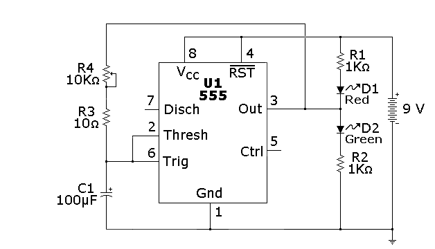
As mentioned in the previous experiment, there is also another convention, shown below:
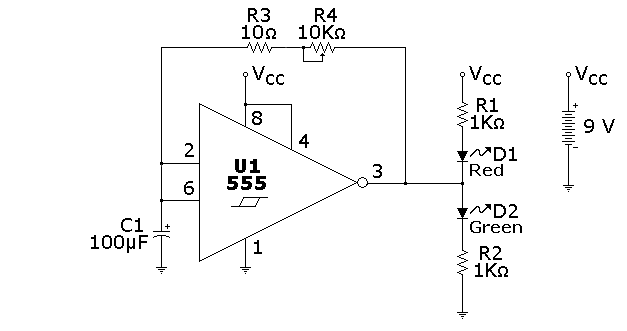
ILLUSTRATION
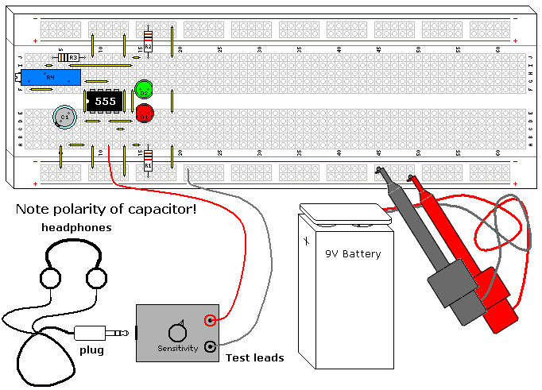
INSTRUCTIONS
This is one of the most basic RC oscillators. It is simple and very predictable. Any inverting Schmitt Trigger will work in this design, although the frequency will shift somewhat depending on the hysteresis of the gate.
This circuit has a lower end frequency of 0.7 Hertz, which means each LED will alternate and be lit for just under a second each. As you turn the potentiometer counterclockwise the frequency will increase, going well into the high end audio range. You can verify this with the Audio Detector (Vol. VI, Chapter 3, Section 12) or a piezoelectric speaker, as you continue to turn the potentiometer the pitch of the sound will rise. You can increase the frequency 100 times by replacing the capacitor with the 1µF capacitor, which will also raise the maximum frequency well into the ultrasonic range, around 70Khz.
The 555 does not go rail to rail (it doesn't quite reach the upper supply voltage) because of its output Darlington transistors, and this causes the oscillators square wave to be not quite symmetrical. Can you see this looking at the LEDs? The higher the power supply voltage, the less pronounced this asymmetry is, while it gets worse with lower power supply voltages. If the output were true rail to rail it would be a 50% square wave, which can be attained if one uses the CMOS version of the 555, such as the TLC555 (Radio Shack P/N 276-1718).
R3 was added to prevent shorting the IC output through C1, as the capacitor shorts the AC portion of the 555 output to ground. On a discharged battery it is not noticeable, but with a fresh 9V the 555 IC will get very hot. If you eliminate the resistor and adjust R4 for maximum frequency you can test this, it is not good for the battery or the 555, but they will survive a short test.
THEORY OF OPERATION
This is a hysteretic oscillator, which is a type of relaxation oscillator. It is also an astable multivibrator. It is a logical offshoot of the 555 Schmitt Trigger experiment shown earlier.
The formula to calculate the frequency with this configuration using a 555 is:
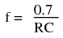
The 555 hysteresis is dependent on the supply voltage, so the frequency of the oscillator would be relatively independent of the supply voltage if it weren't for the lack of rail to rail output.
The output of a 555 either goes to ground, or relatively close to the plus voltage. This allows the resistor and capacitor to charge and discharge through the output pin. Since this is a digital type signal, the LEDs interact very little in its operation. The first pulse generated by the oscillator is a bit longer than the rest. This and the charge/discharge curves are shown in the following illustration, which also shows why the asymmetrical square wave is created.
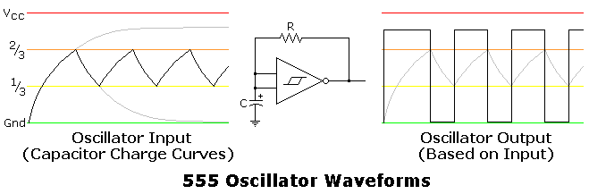
PARTS AND MATERIALS
CROSS-REFERENCES
Lessons In Electric Circuits, Volume 1, chapter 13: “Electric fields and capacitance”
Lessons In Electric Circuits, Volume 1, chapter 13: “Capacitors and calculus”
Lessons In Electric Circuits, Volume 1, chapter 16: “Voltage and current calculations”
Lessons In Electric Circuits, Volume 1, chapter 16: “Solving for unknown time”
Lessons In Electric Circuits, Volume 4, chapter 10: “Monostable multivibrators”
LEARNING OBJECTIVES
SCHEMATIC DIAGRAM
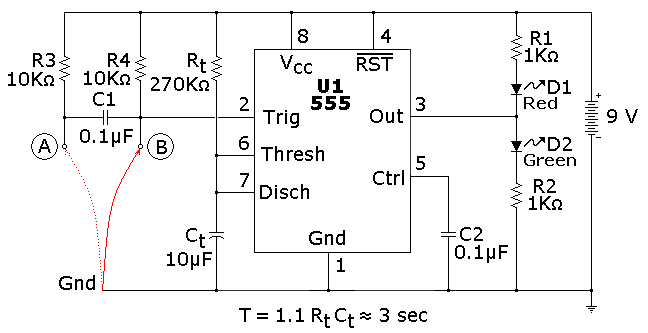
ILLUSTRATION
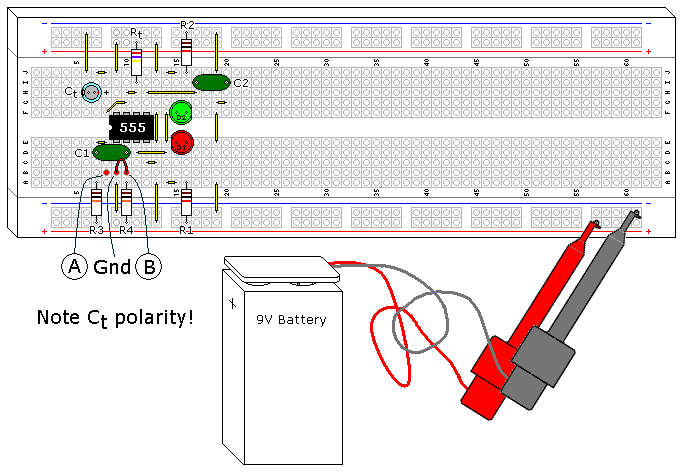
INSTRUCTIONS
This is one of the most basic 555 circuits. This circuit is part of this chips datasheet, complete with the math needed to design to specification, and is one of the reasons a 555 is referred to as a timer. The green LED shown on the illustration lights when the 555 output is high (i.e., switched to Vcc), and the red LED lights when the 555 output is low (switched to ground).
This particular monostable multivibrator (also known as a monostable or timer) is not a retriggerable type. This means once triggered it will ignore further inputs during a timing cycle, with one exception, which will be discussed in the next paragraph. The timer starts when the input goes low, or switched to the ground level, and the output goes high. You can prove this by connecting the red wire shown on the illustration between ground and point B, disconnecting it, and reconnecting it.
It is an illegal condition for the input to stay low for this design past timeout. For this reason R3 and C1 were added to create a signal conditioner, which will allow edge only triggering and prevent the illegal input. You can prove this by connecting the red wire between ground and point A. The timer will start when the wire is inserted into the protoboard between these two points, and ignore further contacts. If you force the timer input to stay low past timeout the output will stay high, even though the timer has finished. As soon as this ground is removed the timer will go low.
Rt and Ct were selected for 3 seconds timing duration. You can verify this with a watch, 3 seconds is long enough that we slow humans can actually measure it. Try swapping Rt and Ct with the 27 KΩ resistor and the 100 µF capacitor. Since the answer to the formula is the same there should be no difference in how it operates. Next try swapping Rt with the 270 KO resistor, since the RC time constant is now 10 times greater you should get close to 30 seconds. The resistor and capacitor are probably 5% and 20% tolerance respectively, so the calculated times you measure can vary as much as 25%, though it will usually be much closer.
Another nice feature of the 555 is its immunity from the power supply voltage. If you were to swap the 9V battery with a 6V or 12 battery you should get identical results, though the LED light intensity will change.
C2 isn't actually necessary. The 555 IC has this option in case the timer is being used in an environment where the power supply line is noisy. You can remove it and not notice a difference. The 555 itself is a source of noise, since there is a very brief period of time that the transistors on both sides of the output are both conducting, creating a power surge (measured in nanoseconds) from the power supply.
THEORY OF OPERATION
Looking at the functional schematic shown (Figure below), you can see that pin 7 is a transistor going to ground.
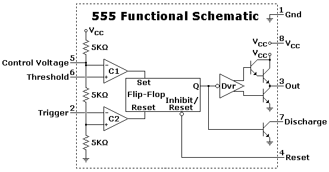
This transistor is simply a switch that normally conducts until pin 2 (which is connected through the comparator C1, which feeds the internal flip flop) is brought low, allowing the capacitor Ct to start charging. Pin 7 stays off until the voltage on Ct charges to 2/3 of the power supply voltage, where the timer times out and pin 7 transistor turns on again, its normal state in this circuit.
The following (Figure below) will show the sequence of switching, with red being the higher voltages and green being ground (0 volts), with the spectrum in between since this is fundamentally an analog circuit.
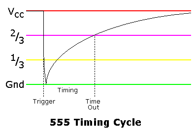
This graph shows the charge curve across the Ct.
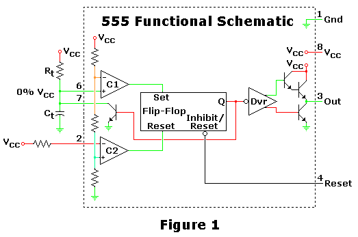
Figure 1 is the starting and ending point for this circuit, where it is waiting for a trigger to start a timing cycle. At this point the pin 7 transistor is on, keeping the capacitor Ct discharged.
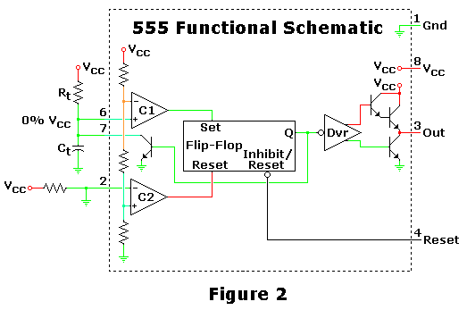
Figure 2 shows what happens when the 555 receives a trigger, starting the sequence. Ct hasn't had time to accumulate voltage, but the charging has started.
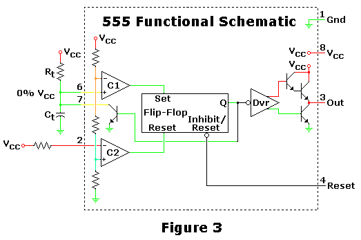
Figure 3 shows the capacitor charging, during this time the circuit is in a stable configuration and the output is high.
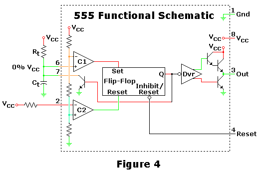
Figure 4 shows the circuit in the middle of switching off when it hits timeout. The capacitor has charged to 67%, the upper limit of the 555 circuit, causing its internal flip flop to switch states. As shown, the transistor hasn't switched yet, which will discharge Ct when it does.
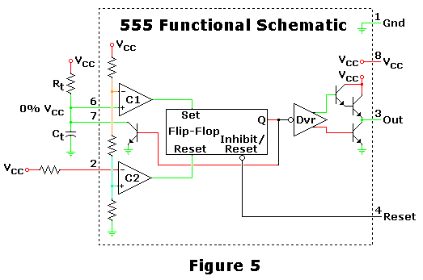
Figure 5 shows the circuit after it has settled down, which is basically the same as shown in Figure 1.
PARTS AND MATERIALS
CROSS-REFERENCES
Lessons In Electric Circuits, Volume 1, chapter 16: “Voltage and current calculations”
Lessons In Electric Circuits, Volume 1, chapter 16: “Solving for unknown time”
Lessons In Electric Circuits, Volume 3, chapter 9 : “ElectroStatic Discharge”
Lessons In Electric Circuits, Volume 4, chapter 10: “Multivibrators”LEARNING OBJECTIVES
SCHEMATIC DIAGRAM
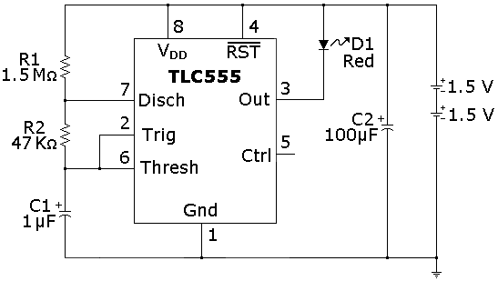
ILLUSTRATION
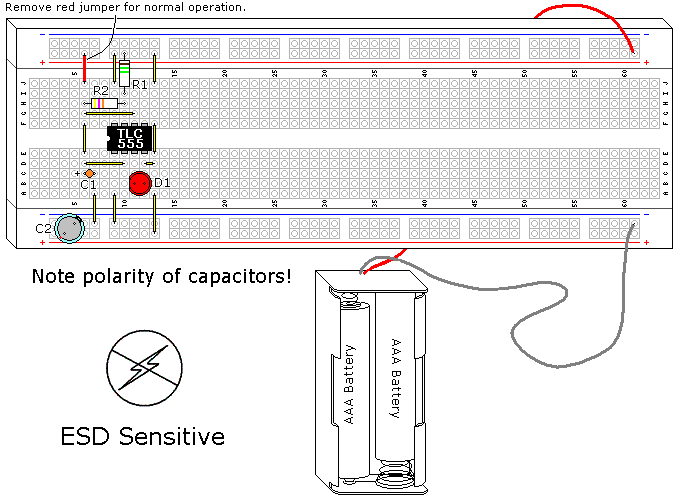
INSTRUCTIONS
NOTE! This project uses a static sensitive part, the CMOS 555. If you do not use protection as described in Volume 3, Chapter 9, ElectroStatic Discharge, you run the risk of destroying it.
The 555 is not a power hog, but it is a child of the 1970's, created in 1971. It will suck a battery dry in days, if not hours. Fortunately, the design has been reinvented using CMOS technology. The new implementation isn't perfect, as it lacks the fantastic current drive of the original, but for a CMOS device the output current is still very good. The main advantages include wider supply voltage range (power supply specifications are 2V to 18V, and it will work using a 11/2V battery) and low power. This project uses the TLC555, a Texas Instruments design. There are other CMOS 555's out there, very similar but with some differences. These chips are designed to be drop in replacements, and do very well as long as the output is not substantially loaded.
This design turns a deficit into an advantage as the current drive only gets worse at lower power supply voltages, its specifications are not more than 3ma for 2VDC. This design tries to make the batteries last as absolutely long as possible using several different approaches. The CMOS IC is extremely low current, and sends the LED a pulse of 30ms (which is a very short time but within persistence of human vision) as well as using a slow flash rate (1 second) using really large resistors to minimize current. With a duty cycle of 3%, this circuit spends most of its time off, and (assuming 20ma for the LED) the average current is 0.6ma. The big problem is using the built in current limitation of this IC, as is it is not rated for a specific current, and the LED current can vary a lot between different CMOS ICs.
It is possible to run into problems with electrolytic capacitors when dealing with very low currents (2µa in this case) in that the leakage can be excessive, a borderline failure condition. If your experiment seems to do this it might be fixed by charging across the battery, then discharging the capacitor C1 across any conductor several times.
When you complete this circuit the LED should start flashing, and would continue to do so for several months. If you use larger batteries, such as D cells, this duration will increase dramatically.
To measure the current draw feeding the LED, connect C1+ to Vcc with a jumper (shown in red on the Illustration), which will turn the TLC555 on. Measure the amperage flowing from the battery to the circuit. The target current is 20ma, I measured 9ma to 24ma using different CMOS 555s. This isn't critical, though it will affect the battery life.
THEORY OF OPERATION
An observant reader will note that this is fundamentally the same circuit that was used in the 555 AUDIO OSCILLATOR experiment. Many designs use the same basic designs and concepts several different ways, this is such a case. A conventional 555 IC would work in this design if the power supply weren't so low and a LED current limiting resistor is used. Other than the type of transistors used the block diagram shown in Figure 1 is basically the same as a conventional 555.
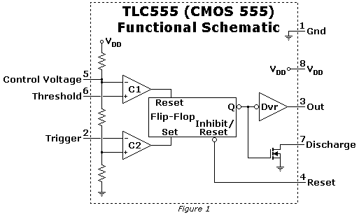
This particular oscillator depends on the pin 7 transistor, much like the 555 Monostable Multivibrator shown in an earlier experiment. The startup condition is with the capacitor discharged, the output high, and pin 7 transistor off. The capacitor starts charging as shown in Figure 2.
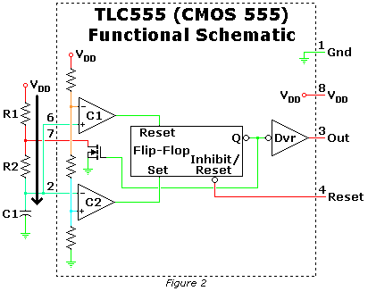
When the voltage across pins 2 and 6 reaches 2/3 of the power supply the flip flop is reset via internal comparator C1, which turns on the Pin 7 transistor, and starts the capacitor C1 discharging through R2 as shown in Figure 3. The current shown through R1 is incidental, and not important other than it drains the battery. This is why this resistor value is so large.
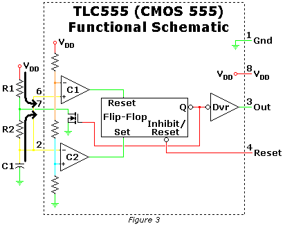
When the voltage across pins 2 and 6 reaches 1/3 of the power supply the flip flop is set via internal comparator C2, when turns off the pin 7 transistor, allowing the capacitor to start charging again through R1 and R2, as shown in Figure 2. This cycle repeats.
Capacitor C2 extends the life of the batteries, since it will store the voltage during the 97% of time the circuit is off, and provide the current during the 3% it is on. This simple addition will take the batteries beyond their useful life by a large margin.
In running this experiment there was a feedback mechanism I hadn't anticipated. The output current of the TLC555 is not proportional, as the power supply voltage goes down the output current reduces a lot more. My flasher lasted for 6 months before I terminated the experiment. It was still flashing, it was just very dim.
PARTS AND MATERIALS
CROSS-REFERENCES
Lessons In Electric Circuits, Volume 1, chapter 16: “Voltage and current calculations“
Lessons In Electric Circuits, Volume 1, chapter 16: “Solving for unknown time”
Lessons In Electric Circuits, Volume 3, chapter 4 : “Bipolar Junction Transistors”
Lessons In Electric Circuits, Volume 3, chapter 9 : “ElectroStatic Discharge”
Lessons In Electric Circuits, Volume 4, chapter 10: “Multivibrators”
LEARNING OBJECTIVES
SCHEMATIC DIAGRAM
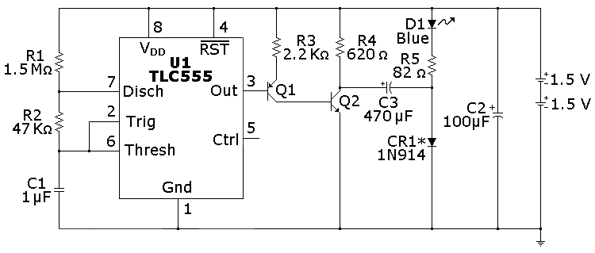
ILLUSTRATION
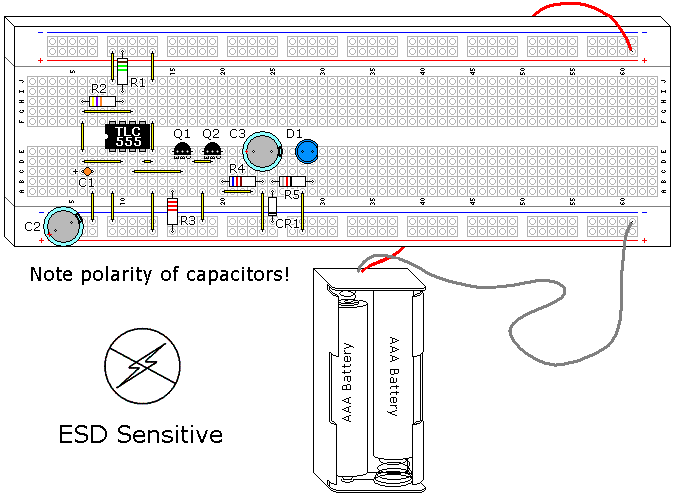
INSTRUCTIONS
NOTE! This project uses a static sensitive part, the CMOS 555. If you do not use protection as described in Volume 3, Chapter 9, ElectroStatic Discharge, you run the risk of destroying it.
This circuit builds on the previous two experiments, using their features and adding to them. Blue and white LEDs have a higher Vf (forward dropping voltage) than most, around 3.6V. 3V batteries can't drive them without help, so extra circuitry is required.
As in the previous circuits, the LED is given a 0.03 second (30ms) pulse. C3 is used to double the voltage of this pulse, but it can only do this for a short time. Measuring the current though the LED is impractical with this circuit because of this short duration, but blue LEDs are generally more predictable because they were invented later.
This particular design can also be used with a single 1 1/2V battery. The base concept was created with a now obsolete IC, the LM3909, which used a red LED, the IC, and a capacitor. As with this circuit, it could flash a red LED for over a year with a single D cell. When newer red LEDs increased their Vf from 1.5V to 2.5V this old chip was no longer practical, and is still missed by many hobbyists. If you want to try a 11/2V battery change R5 to 10Ω and use a red LED with a better CR1 (see next paragraph) .
CR1 is not the best choice for this component, it was selected because it is a common part and it works. Almost any diode will work in this application. Schottky and germanium diodes drop much less voltage, a silicon diode drops 0.6-0.7V, while a Schottky diode drops 0.1-0.2V, and a germanium diode drops 0.2V-0.3V. If these components are used the reduced voltage drop would translate into brighter LED intensity, as the circuits efficiency is increased.
THEORY OF OPERATION
Q2 is a switch, which this circuit uses. When Q2 is off C3 is charged to the battery voltage, minus the diode drop, as shown in Figure 1. Since the blue LED Vf is 3.4V to 3.6V it is effectively out of the circuit.
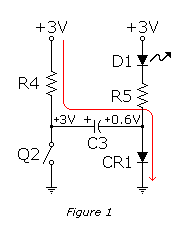
Figure 2 shows what happens when Q2 turns on. The capacitor C3 + side is grounded, which moves the - side to -2.4V. The diode CR1 is now back biased, and is out of the circuit. The -2.4V is discharged through R5 and D1 to the +3.0V of the batteries. The 5.4V provides lots of extra voltage to light the blue LED. Long before C3 is discharged the circuit switches back and C3 starts charging again.
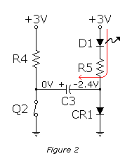
In the LM3909 CR1 was a resistor. The diode was used to minimize current, by allowing R4 to be its maximum value.
You may notice a dim blue glow in the blue LED when it is off. This demonstrates the difference between theory and practice, 3V is enough to cause some leakage through the blue LED, even though it is not conducting. If you were to measure this current it would be very small.
PARTS AND MATERIALS
CROSS-REFERENCES
Lessons In Electric Circuits, Volume 1, chapter 16: Title "Inductor transient response"
Lessons In Electric Circuits, Volume 1, chapter 16: Title "Why L/R and not LR?"
Lessons In Electric Circuits, Volume 3, chapter 4: Title "The common-emitter amplifier"
Lessons In Electric Circuits, Volume 3, chapter 9: Title "Electrostatic Discharge"
Lessons In Electric Circuits, Volume 4, chapter 10: Title "Monostable multivibrators"
LEARNING OBJECTIVES
SCHEMATIC DIAGRAM
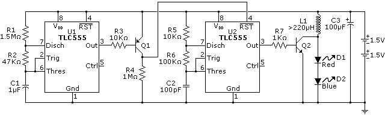
ILLUSTRATION
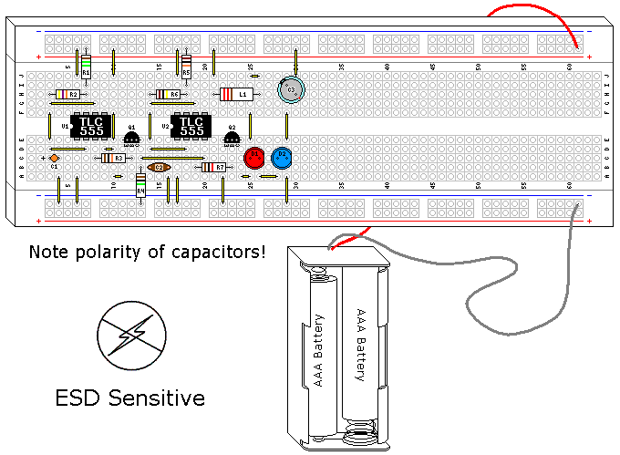
INSTRUCTIONS
NOTE! This project uses a static sensitive part, the CMOS 555. If you do not use protection as described in Volume 3, Chapter 9, ElectroStatic Discharge, you run the risk of destroying it.
This particular experiment builds on another experiment, "Commutating diode" (Volume 6, chapter 5). It is worth reviewing that section before proceeding.
This is the last of the long duration LED flasher series. They have shown how to use a CMOS 555 to flash an LED, and how to boost the voltage of the batteries to allow an LED with more voltage drop than the batteries to be used. Here we are doing the same thing, but with an inductor instead of a capacitor.
The basic concept is adapted from another invention, the Joule Thief. A joule thief is a simple transistor oscillator that also uses inductive kickback to light an white light LED from a 11/2 battery, and the LED needs at least 3.6 volts to start conducting! Like the joule thief, it is possible to use 11/2 volts to get this circuit to work. However, since a CMOS 555 is rated for 2 volts minimum 11/2 volts is not recommended, but we can take advantage of the extreme efficiency of this circuit. If you want to learn more about the joule thief plenty of information can be found on the web.
This circuit can also drive more that 1 or 2 LEDs in series. As the numbers of LEDs go up the ability of the batteries to last a long duration goes down, as the amount of voltage the inductor can generate is somewhat dependent on battery voltage. For the purposes of this experiment two dissimilar LEDs were used to demonstrate its independence of LED voltage drop. The high intensity of the blue LED swamps the red LED, but if you look closely you will find the red LED is at its maximum brightness. You can use pretty much whatever color of LEDs you choose for this experiment.
Generally the high voltage created by inductive kickback is something to be eliminated. This circuit uses it, but if you make a mistake with the polarity of the LEDs the blue LED, which is more ESD sensitive, will likely die (this has been verified). An uncontrolled pulse from a coil resembles an ESD event. The transistor and the TLC555 can also be at risk.
The inductor in this circuit is probably the least critical part in the design. The term inductor is generic, you can also find this component called a choke or a coil. A solenoid coil would also work, since that is also a type of inductor. So would the coil from a relay. Of all the components I have used, this is probably the least critical I've come across. Indeed, coils are probably the most practical component you can make yourself that exists. I'll cover how to make a coil that will work in this design after the Theory of Operation, but the part shown on the illustration is a 200µH choke I bought from a local electronics retailer.
THEORY OF OPERATION
Both capacitors and inductors store energy. Capacitors try to maintain constant voltage, whereas inductors try to maintain constant current. Both resist change to their respective aspect. This is the basis for the flyback transformer, which is a common circuit used in old CRT circuits and other uses where high voltage is needed with a minimum of fuss. When you charge a coil a magnetic field expands around it, basically it is an electromagnet, and the magnetic field is stored energy. When the current stops this magnetic field collapses, created electricity as the field crosses the wires in the coil.
This circuit uses two astable multivibrators. The first multivibrator controls the second. Both are designed for minimum current, as well as the inverter made using Q1. Both the oscillators are very similar, the first has been covered in previous experiments. The problem is it stays on, or is high, 97% of the time. On the previous circuits we used the low state to light the LED, in this case the high is what turns the second multivibrator on. Using a simple transistor inverter designed for extra low current solves this problem. This is actually a very old logic family, RTL, which is short for resistor transistor logic.
The second multivibrator oscillates at 68.6 KHz, with a square wave that is around 50%. This circuit uses the exact same principals as is shown in the Minimum Parts LED Flasher. Again, the largest practical resistors are used to minimize current, and this means a really small capacitor for C2. This high frequency square wave is used to turn Q2 on and off as a simple switch.
Figure 1 shows what happens when the Q2 is conducting, and the coil starts to charge. If Q2 were to stay on then an effective short across the batteries would result, but since this is part of an oscillator this won't happen. Before the coil can reach it's maximum current Q2 switches, and the switch is open.
Figure 2 shows Q2 when it opens, and the coil is charged. The coil tries to maintain the current, but if there is no discharge path it can not do this. If there were no discharge path is the coil would create a high voltage pulse, seeking to maintain the current that was flowing through it, and this voltage would be quite high. However, we have a couple of LEDs in the discharge path, so the coils pulse quickly goes to the voltage drop of the combined LEDs, then dumps the rest of its charge as current. As a result there is no high voltage generated, but there is a conversion to the voltage required to light the LEDs.
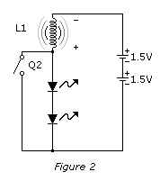
The LEDs are pulsed, and the light curve follows the discharge curve of the coil fairly closely. However, the human eye averages this light output to something we perceive as continuous light.
PARTS AND MATERIALS
As has been mentioned before, this is not a precision part. Inductors in general can have a large variance for many applications, and this one specifically can be off on the high side a large amount. The target here is greater than 220µH.
If you are using a screw, use one layer of the transparent tape between the threads and the wire. This is to prevent the threads of the screw from cutting into the wire and shorting the coil out. If you are using a lock nut put it on the screw 1" (25mm) from the head of the screw. Starting around 1" from one end of the wire, use the glue to tack the wire on the head of the nail or screw as shown. Let the glue set.
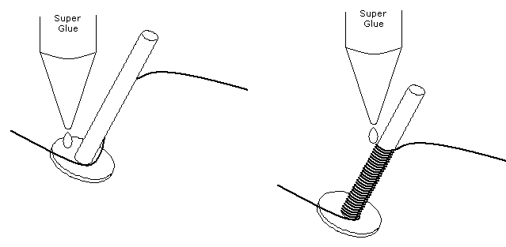
Wind the wire neatly and tightly 1" the length of screw, again tacking it in place with super glue. (Figure above). You can use a variable speed drill to help with this, as long as you are careful. Like all power appliances, it can bite you. Hold the wire tight until the glue sets, then start winding a second layer over the first. Continue this process until all of the wire except the last 1" is used, using the glue to occasionally tack the wire down. Arrange the wire on the last layer so the second inductor lead is on the other end of the screw away from the first. Tack this down for a final time with the glue. Let dry completely.
Gently take a sharp blade and scrap the enamel off each end of the two leads. Tin the exposed copper with the soldering iron and the solder, and you now have a functional inductor that can be used in this experiment.
Here is what the one I made looked like: Figure below.
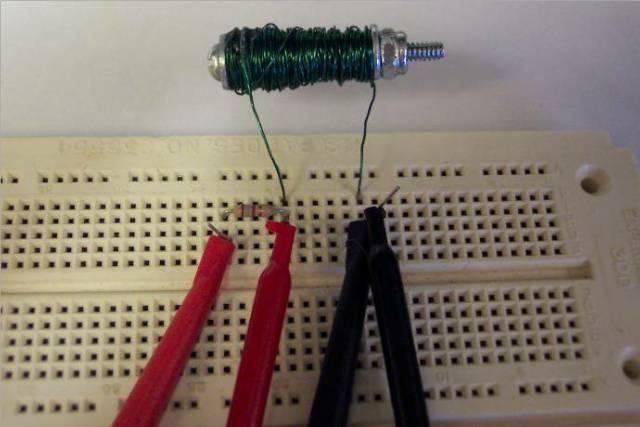
The connections shown are being used to measure the inductance, which worked out pretty close to 220µH.
PARTS AND MATERIALS
CROSS-REFERENCES
Lessons In Electric Circuits, Volume 1, chapter 16: “Voltage and current calculations”
Lessons In Electric Circuits, Volume 1, chapter 16: “Solving for unknown time”
Lessons In Electric Circuits, Volume 3, chapter 4 : “Bipolar Junction Transistors”
Lessons In Electric Circuits, Volume 3, chapter 9 : “ElectroStatic Discharge”
Lessons In Electric Circuits, Volume 4, chapter 10: “Multivibrators”
LEARNING OBJECTIVES
SCHEMATIC DIAGRAM
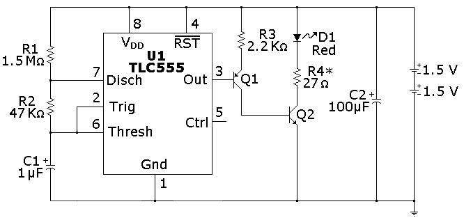
ILLUSTRATION
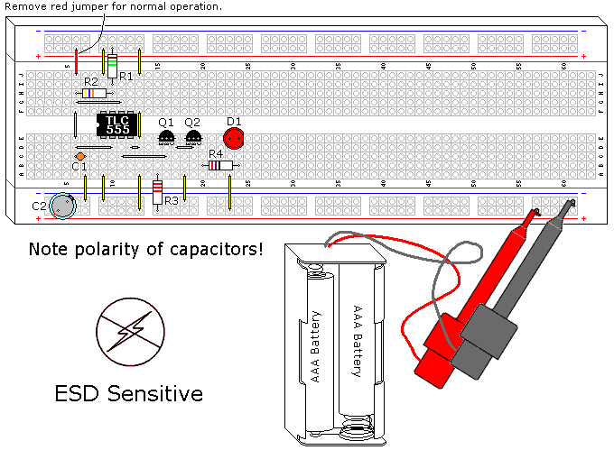
INSTRUCTIONS
NOTE! This project uses a static sensitive part, the CMOS 555. If you do not use protection as described in Volume 3, Chapter 9, ElectroStatic Discharge, you run the risk of destroying it.
The circuit shown in the previous experiment, CMOS 555 Long Duration Minimum Parts Red LED Flasher, has one big drawback, which is a lack of LED current control. This experiment uses the same basic 555 schematic and adds transistorized drivers to correct this.
The parts used for this transistor driver are non critical. It is designed to load the TLC555 to an absolute minimum and still turn on Q2 fully. This is important because as the battery voltage approaches 2V the drive from the TLC555 is reduced to its minimum values. Bipolar transistors can be good switches.
Since LEDs can have so much variation R4 should be tweaked to match the specific LED used. The current is limited to 18.5ma with 27Ω and a Vf (LED forward dropping voltage) of 2.5V, an LED Vf of 2.1V will draw 33ma, and a LED Vf of 1.5 will draw 56ma. The latter is too much current, not to mention what that would do for the battery life. To correct this use 47Ω if the Vf is 2.1V, and 75Ω if the Vf is 1.5V, assuming the target current is 20ma.
You can measure Vf by using the jumper shown in red in the illustration, which will turn the LED on full time. You can calculate the value of R4 by using the equation:
R4 = (3V-Vf) / 0.02AIt was mentioned in the previous experiment that capacitor C2 extended the life of the batteries. An interesting experiment is to remove this part periodically and see what happens. At first you will notice a dimming of the LED, and after a week or two the circuit will die without it, and resume working in a couple of seconds when it is replaced. This flasher will work for 3 months using fresh alkaline AAA batteries.
THEORY OF OPERATION
The CMOS 555 oscillator was explained fully in the previous experiment, so the transistor driver will be the focus of this explanation.
The transistor driver combines elements of a common collector configuration on Q1, along with common emitter configuration on Q2. This allows for very high input resistance while allowing Q2 to turn on fully. The input resistance of the transistor is the β (gain) of the transistor times the emitter resistor. If Q1 has a gain of 50 (a minimum value) then the driver loads the TLC555 with more than 100KΩ. Transistors can have large variations in gain, even within the same family.
When Q1 turns on 1ma is sent to Q2. This is more than enough to turn Q2 fully, which is referred to as saturation. Q2 is used as a simple switch for the LED.
Lessons In Electric Circuits copyright (C) 2002-2023 Tony R. Kuphaldt, under the terms and conditions of the CC BY License.
{kind=link}
{kind=link}
{kind=link}
{kind=link}
{kind=link}
{kind=link}
{kind=link}
{kind=link}
{kind=link}
{kind=link}
{kind=link}
{kind=link}
{kind=link}
{kind=link}
{kind=link}
{kind=link}